配置手顺（C0〜C16）—— 練習配置
.png 放进 assets/gui/ 后执行 python3 tools/swap_gui_images.py <site> --apply 即可一键替换。VOV8）・C3（OVT0）・C4（OVS9）・C5（SIS レポートビュー）です。それ以外は
「受注処理が成り立つために必要な設定」として、動画の概念スライド（伝票データの 4 つの源泉）と対応させて並べました。各 STEP は 目的 / IMG パス / T-code / 入力値 / 手順 / 確認（自系统） / つまずき / 練習課題 の固定構成です。 標準値は環境で異なるので暗記せず、必ず「自系统での確認方法」で自分の環境の値を確かめてください。 練習では
Z で始まる自分のオブジェクトを作る方針を推奨します（標準を壊さないため）。配置前的准备
配置に入る前に 3 つ確認します。① カスタマイジング依頼（Transport Request）を指定できるか、
② SPRO に入れる権限があるか（照会だけでも学習は可能）、③ 練習用の販売エリア・得意先・品目が使えるか（C0）。
VOV8 でコピーすれば標準を壊さずに練習できます（推奨：ZOR1）。
② 明細カテゴリの決定を触る勇気：決定テーブル（VOV4）は受注が動かなくなる箇所です。1 行ずつ追加して検証してください。
③ SIS（VC/2）は統計ファイルに依存します。C5 で情報ビューを足しても、統計が未構築なら数字は出ません（構造だけは見えます）。
④ 動画は 2007 年頃の R/3です。S/4HANA では Fiori アプリに置き換わった操作があります（VA01 →「Sales Order」アプリ等）。画面は違っても、決まり方（決定テーブル・優先順位）は同じです。前提与环境确认（受注が成立する 5 条件）
VA01・VA03・XD03・MM03・VK13・SU3- 目的
- 動画のデモを自分の環境で再現できるかを、最初に確認します。受注は「得意先・品目・条件・組織」の 4 つが揃わないと 1 件も作れません。ここを飛ばすと、以降の練習で「なぜか保存できない」で止まります。
- IMG パス（環境によって呼称が異なる）
- SPRO → 販売と流通（Sales and Distribution）／権限は
SU3のプロファイルで確認。動画の環境は SAP Training System / クライアント800/ ユーザS000・tscm6-00です（自システムの値に読み替えてください）。 - T-code
VA01（初期画面）・VA03（照会）・XD03（得意先）・MM03（品目）・VK13（条件レコード）・SU3（ユーザプロファイル）・SE16N（テーブル照会）
- 入力値 / 確認対象
販売組織 1000 / 販売チャネル 10 / 部門 00 （＝販売エリア。動画のデモ値） 得意先 1000（Becker Berlin）または T-S62130（Teleko Textilien） 品目 T-ATA30（明細カテゴリ TAN になること）/ T-ATA29 受注タイプ OR（Standard Order） 支払条件 ZB01（14 Days 3%, 30/2%） インコタームズ FOB 出荷プラント（品目マスタ 販売組織1 の値。動画では 1200） 与力条件 PR00（および税 MWST）が受注日を含む有効期間で存在すること
- 販売エリア：
VA01の初期画面で1000／10／00が F4 で選べること（選べない＝組織構造の割当未了）。 - 得意先：
XD03→ 得意先1000→ 販売エリアビューがあり、パートナー機能（SP／BP／PY／SH）と支払条件・インコタームズが入っていること。 - 品目：
MM03→ 品目T-ATA30→ 販売組織 1（出荷プラント・品目カテゴリグループ）、販売組織 2、プラント在庫ビューがあること。 - 与力条件：
VK13でPR00（価格）を照会。得意先×品目の組み合わせで有効な条件レコードがあること（無いと Net value が 0 のままになります）。 - 権限とユーザ設定：
SU3で自分のユーザ（動画ではtscm6-00）の 住所・既定値（Defaults）・パラメータ（Parameters）を確認。ここで受注の既定値を仕込んでおくと入力が減ります。
VA01 で OR ＋ 得意先 1000 まで入れて Enter し、概況画面（Create Standard Order: Overview）が開くこと。② 得意先が複数の販売エリアを持つ場合、動画と同じく「Sales area for customer」ダイアログが出ます（
09:02 付近）。ここで選んだ販売エリアが以降のすべての基準になります。③ 保存はしないで構いません（C0 は「入口が開くか」の確認だけ）。
XD03）。② 与力条件が無く Net value が
0.00 → 受注の問題ではなく条件レコードの問題（VK13 で有効期間を確認）。③ 動画ではPO 番号が必須になっています（保存時に「Enter PO number」のエラーが出る場面があります）。自システムの必須項目は
V.02（不完全な受注一覧）で確認するのが早道です。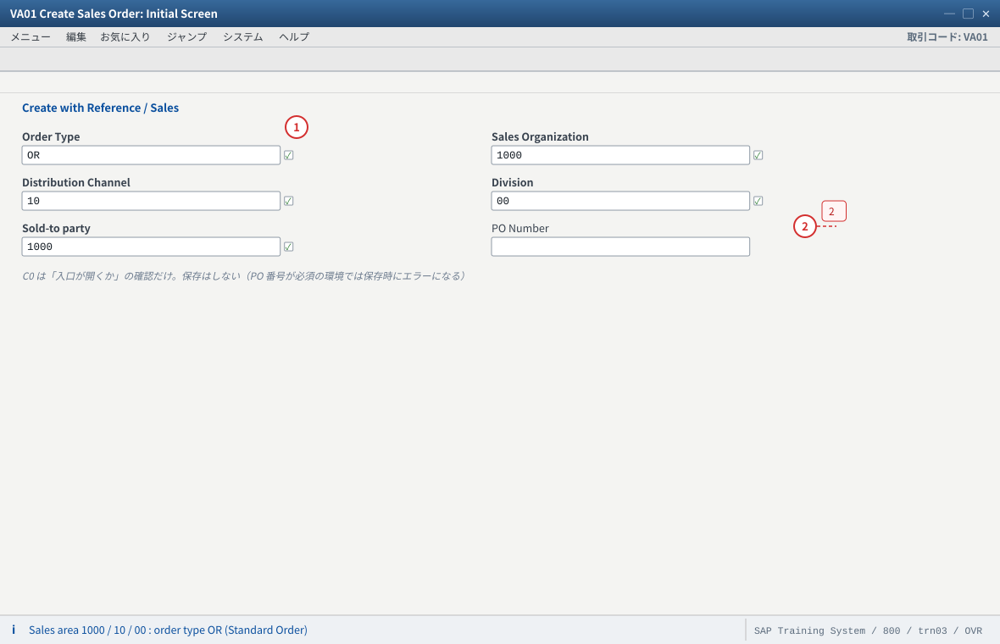
- 1 F4 で 1000／10／00 が選べないときは、販売組織→流通チャネル→部門の割当未了を疑う。受注側の問題ではない
- 2 得意先は複数の販売エリアを持ち得る。Enter 後に「Sales area for customer」ダイアログが出たら 1000 / 10 / 00 を選ぶ
自システムでの確認：得意先 1000 が無ければ T-S62130（Teleko Textilien, Mainz）で読み替える。項目名は環境により異なる（S/4HANA では Fiori アプリに置き換わっている場合がある）。
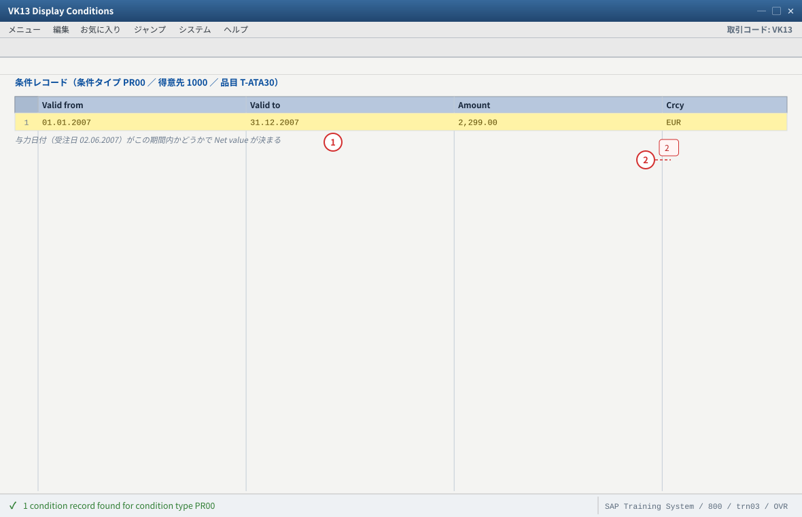
- 1 条件レコードが無い／期間外だと Net value は 0.00 のまま。受注の設定を疑う前にここを見る
- 2 金額は環境により異なる。自分の環境では受注の Net value（動画は 22,990.00 EUR / 10 PC）から逆算して確認する
自システムでの確認：VK13 で PR00 → 得意先 1000 × 品目 T-ATA30。行が無ければ VA03 の条件画面で Net value 0.00 になる理由がここ。期間・金額・欄名は環境により異なる。
伝票タイプ（Sales Document Types）— 動画の Customizing ①
VOV8・SE16N（TVAK）- 目的
- 受注タイプは受注処理の「性格」を決める 1 番の設定です。動画（
51:35付近）ではVOV8の詳細画面が実演され、出荷・請求まわりの項目（納入タイプ・納入ブロック・出荷条件・即時出荷・請求タイプ・請求ブロック）が示されます。動画が見ているのは一覧（238 エントリ）と、その中のCR（Credit Memo Request）の詳細です。ORの詳細は値が違うので、自分の環境でORの詳細を開いて読み替えてください（所要量タイプ・ブロックの有無・請求タイプは伝票タイプごとに違います）。 - IMG パス（環境によって呼称が異なる）
- SPRO → 販売と流通 → 販売 → 販売伝票 → 販売伝票ヘッダ → 販売伝票タイプを定義（呼称はリリースで異なる。SPRO の検索窓に「販売伝票タイプ」で探すのが確実）
- T-code
VOV8（伝票タイプの定義＝動画で実演）／SE16NでテーブルTVAK（伝票タイプ）・TVAKT（名称）を確認
- 入力値 / 確認対象
伝票タイプ：OR（Standard Order） ← 標準。練習では ZOR1 を作る 今回の練習で作るもの（推奨）： 伝票タイプ ZOR1 名称 Z受注（練習用） ← OR をコピーして作成 作成時に確認する主な項目： 与力関連／明細カテゴリ決定／価格決定手順／与信・納入・請求ブロック 出荷：納入タイプ（LF）・出荷条件・即時出荷 請求：出荷関連請求タイプ・受注関連請求タイプ（例 G2 Credit Memo）・請求ブロック（例 08） テキスト・出力決定手順・不完全性手順（→ C14）
VOV8を起動 → 一覧（動画では 238 エントリ）でORを確認 →「照会」→「コピー（新しいエントリを作成／Copy As）」でZOR1を作る。- 明細カテゴリ決定・価格決定手順・不完全性手順・テキスト決定手順を、
ORと同じ値で引き継がせる（練習では変えない）。 - 出荷ブロックを確認：標準
ORは空。ここに値を入れると、その伝票タイプで作った受注が最初から出荷ブロック付きになります（練習②で実験）。 - 請求ブロックを確認：動画の
VOV8詳細画面では08 Check credit memoのような値が出ています（CRの受注関連請求タイプG2= Credit Memo）。これは CR の値なので、OR では別の値になります。 - 照会だけなら
VOV8は表示モードでも安全です。変更は必ずカスタマイジング依頼（Transport）に入れてください。
VOV8 の一覧に OR と作成した ZOR1 が並んでいる。② 詳細画面で出荷・請求・与信・不完全性の各グループの値を読み上げられること（動画と同じ項目を指せること）。
③
SE16N で TVAK を見て、同じ伝票タイプが 1 行になっていること（画面とテーブルが一致することを確認）。OR を直接変更してしまう → 以降の標準動作が変わります。必ず Z コピー。② 伝票タイプを変えたのに受注の挙動が変わらない → 既存受注は作ったときの設定を保持します（新規受注で確認）。
③ 出荷タイプ・請求タイプの決定は伝票タイプ側と品目側の両方が絡みます（出荷タイプは出荷タイプ決定テーブル）。「設定したのに反映されない」は決定テーブルを確認。
VOV8 で OR の詳細を開き、出荷／請求グループの項目名を 6 つ書き出して、それぞれ「受注の何を決めるか」を 1 行で説明してください。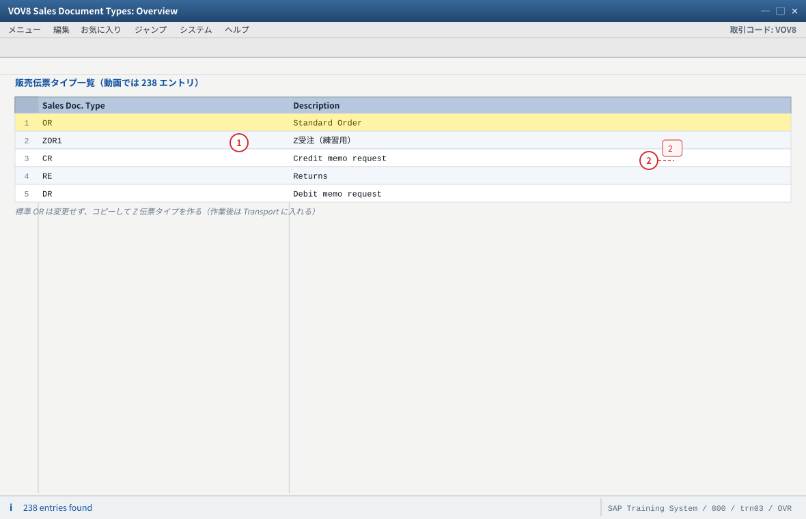
- 1 OR の行で「照会」→「新しいエントリを作成（コピー）」が練習の起点。標準 OR を直接変えると標準業務の挙動が変わってしまう
- 2 一覧に出るのはキーと名称だけ。出荷・請求・価格の実値は詳細画面に入ってから読む（同じ VOV8 の中）
自システムでの確認：VOV8 の一覧を SE16N の TVAK（名称は TVAKT）と突き合わせると、画面とテーブルが 1 対 1 で対応することが分かる。エントリ数は環境により異なる（動画は 238）。
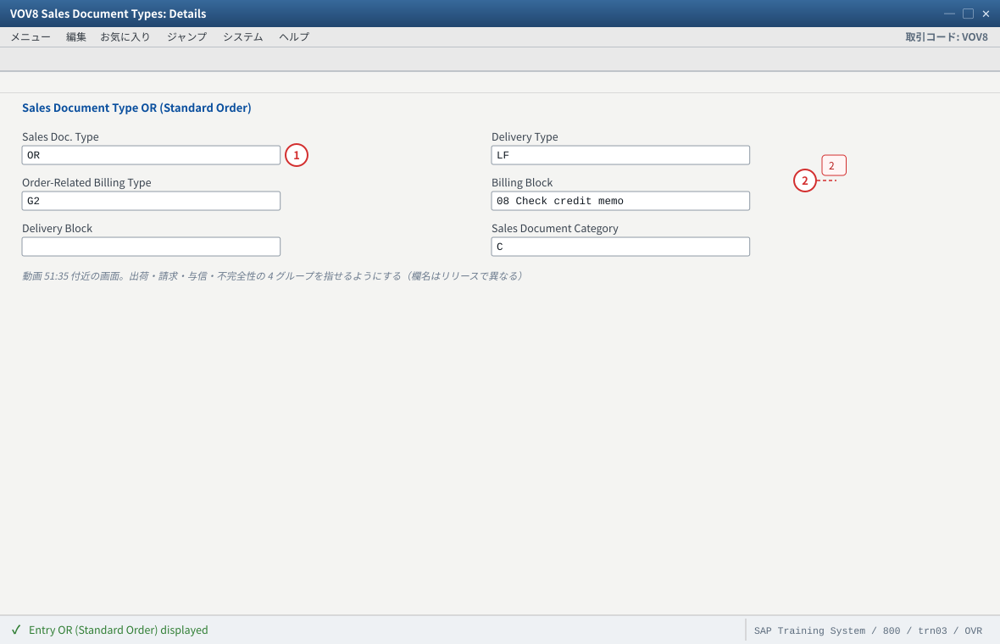
- 1 Delivery Type LF は「伝票タイプ側の既定」。実際の出荷タイプは出荷タイプ決定テーブルで上書きされる（設定が効かない＝決定テーブルを疑う）
- 2 請求ブロック 08 と受注関連請求タイプ G2（Credit Memo）はセット。出荷関連請求タイプ（例 F2）とは別物なので混同しない
自システムでの確認：出荷条件・即時出荷・請求タイプ・不完全性手順の欄もあわせて指せるようにする。標準値は環境・リリースで異なるので暗記しない。
明細カテゴリ（Item Categories）— 明細の性格を決める
VOV7・SE16N（TVAP・TSTL）- 目的
- 明細カテゴリは「その明細が何をするか」を決めます。動画のデモでは明細カテゴリは
TAN（Standard Item）です。ここが変わると、所要量が作られるか（受注在庫になるか）、在庫確認（ATP）をするか、価格を探すか、が変わります。 - IMG パス（環境によって呼称が異なる）
- SPRO → 販売と流通 → 販売 → 販売伝票 → 販売伝票明細 → 販売伝票明細カテゴリを定義
- T-code
VOV7／SE16N（TVAP＝明細カテゴリ、TVAPT＝名称）
- 入力値 / 確認対象
明細カテゴリ：TAN（Standard Item） ← ドイツ語 „Standard“ 由来。動画のデモの値 確認する主な項目： 一般：明細カテゴリグループ／高レベル明細カテゴリ（構造） 与力：与力関連（Pricing relevant） 所要量：所要量タイプ（TAN は空＝所要量を作らない） 在庫：在庫管理（在庫を持つか） 請求：請求関連、請求タイプの決定 納入日程：納入日程行カテゴリの決定（→ VOV5）
VOV7でTANの詳細を開き、「所要量タイプ」が空であることを自分で確認する（＝TANは在庫を持たない標準明細）。- 同じ画面で 「与力関連」が ONであることを確認（＝与力価格が決定される）。
- 明細カテゴリの一覧で
TAE／TAB（見積・照会など）やTANNなどの違いを見て、受注（TAN）と見積の明細カテゴリが別物であることを確認。 - 練習用を作る場合は
ZTAN（TANのコピー）を作り、以降の決定テーブルはZTANで試す。
VOV7 で TAN の「所要量タイプ」が空／「与力関連」が ON であること。②
VA03 で動画と同じ受注（明細カテゴリ TAN、品目 T-ATA30）を開き、画面の明細カテゴリと設定画面が一致すること。③
MD04 で T-ATA30 を見て所要量が作られていないこと（＝TAN は所要量作成をしない）を確認。TAN では正常です。受注在庫・所要量は戦略グループと所要量クラスを持つ品目（→ ../sapmto/）の話。② 明細カテゴリを変えると既存の納入日程行・請求関連の挙動も変わるため、後続伝票がある受注では変更しない。
③
TAN と TAE（見積）を混同しない。照会・見積・受注で明細カテゴリが違うのは正常です。VOV7 で TAN／TAE／TAB の 3 つを比較し、所要量タイプ・与力関連・在庫管理の 3 項目の違いを表にしてください。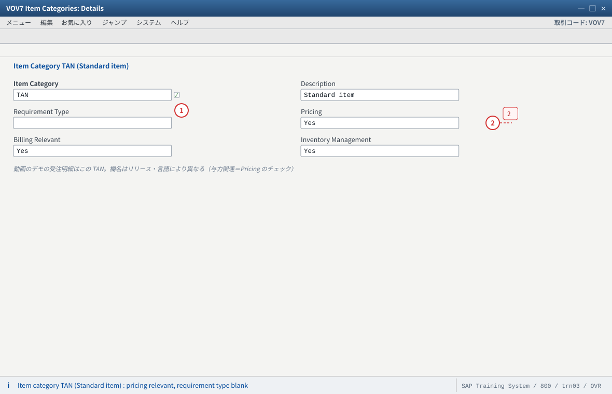
- 1 所要量タイプが空＝所要量を作らない。だから TAN の受注は MD04 に何も出ない（故障ではなく仕様）
- 2 与力関連（Pricing）が OFF だと Net value が 0.00 のままになる。受注明細の金額が出ないときの最初の確認点
自システムでの確認：VA03 で動画と同じ受注（品目 T-ATA30、明細カテゴリ TAN）を開き、画面の明細カテゴリと VOV7 の設定が一致することを見る。
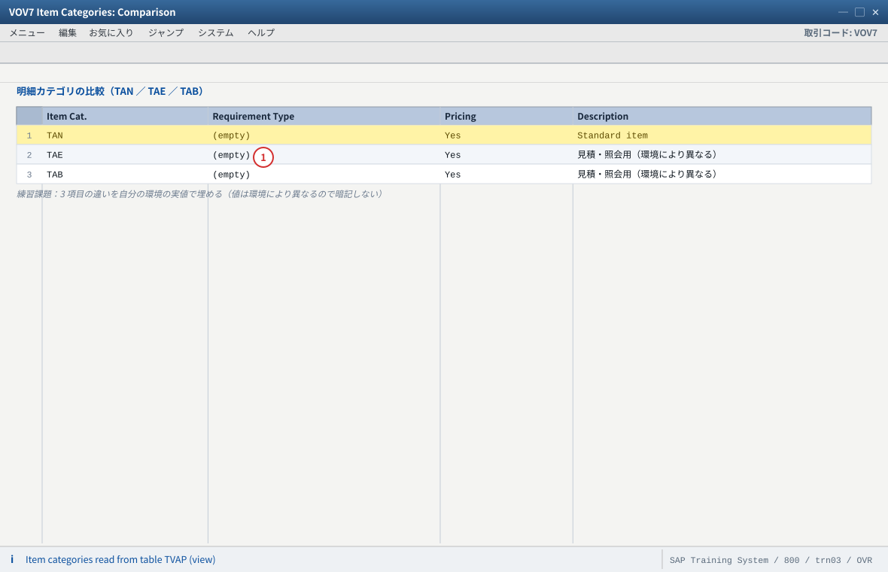
- 1 受注と見積・照会で明細カテゴリが別物なのは正常。所要量タイプが入るカテゴリだけが在庫確認・所要量作成の対象
自システムでの確認：比較は VOV7 の詳細と SE16N の TVAP・TVAPT で行う。どのカテゴリがどの値かは自分の環境で必ず実測する。
得意先勘定グループ（Customer Account Groups）— 動画の Customizing ②
OVT0・XD02- 目的
- 動画（
52:54〜54:09）はOVT0で得意先勘定グループの詳細画面を実演します。勘定グループは得意先の番号範囲・項目ステータス（必須/表示のみ）・パートナー決定手順・出力決定手順を決める、得意先マスタの「型」です。動画では0001 Sold-to party／0002 Goods recipient／0003 Payer／0004 Bill-to partyが一覧で示されます。 - IMG パス（環境によって呼称が異なる）
- SPRO → 財務会計／販売と流通 → 基本機能 → 取引先 → 得意先 → 得意先勘定グループを定義（
OVT0） - T-code
OVT0（動画で実演）／XD02（得意先マスタで使用中の勘定グループを確認）
- 入力値 / 確認対象
動画で確認できる勘定グループ（標準）： 0001 Sold-to party 0002 Goods recipient 0003 Payer 0004 Bill-to party 0005 Prospective customer 0006 Competitor 0007 Sales partner 勘定グループ 0001 の詳細（動画の画面）： 番号範囲 01 ／ One-time acct（未チェック） 項目ステータス：General data／Company code data／<b>Sales data</b> （動画では Competitors／Sales partner／Prospect／Default SP／Consumer の各チェックが外れている）
OVT0を起動 → 一覧で0001〜0007を確認（動画と同じ並び）。- 詳細画面で 「Expand field status」を押し、項目ステータス（必須／任意／表示のみ）を確認する（＝どの項目が受注登録時に必須になるかの源流）。
- 番号範囲を確認（動画は
01）。XD01で得意先を新規作成するとき、この番号範囲が採番に使われます。 - パートナー決定手順・出力決定手順の欄を確認（動画の画面にも
PartnDet.Proc.／OutputDet.Proc.が出ています）。受注のパートナーがどう決まるかはここが起点。 XD02で得意先1000を開き、上部の勘定グループが何になっているかを確認（この得意先がどの「型」かが分かります）。
OVT0 の一覧に 0001〜0007 があること。② 得意先
1000 の勘定グループが分かること（XD02）。③ 「勘定グループを変えると何が変わるか」を 3 つ言えること（番号範囲・項目ステータス・パートナー/出力決定手順）。
② 「受注で住所が必須にならない」→ 勘定グループの項目ステータスが原因（
OVT0）。受注側の設定だと思い込むと迷子になります。OVT0 で 0001 と 0002 の項目ステータスを比べ、違いが業務上何を意味するかを 3 行で書いてください。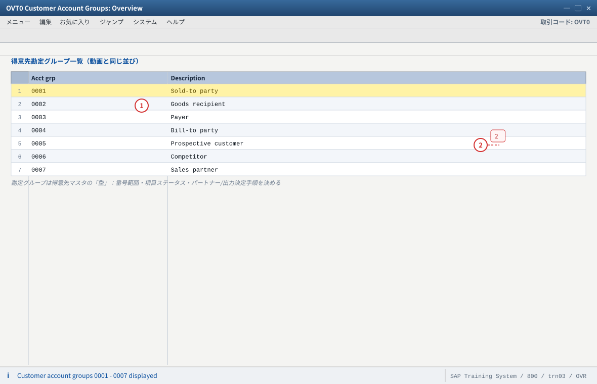
- 1 0001 は受注の「得意先」用。0002〜0004 は出荷先・支払元・請求先で、受注の 4 役割（SP/SH/PY/BP）と対応する
- 2 OVS9 の得意先グループとは別物。名前が似ているが、受注の挙動を変えるのがこちら（勘定グループ）
自システムでの確認：件数・名称は環境により異なる。得意先 1000 がどの勘定グループかは XD02 のヘッダで確認する。
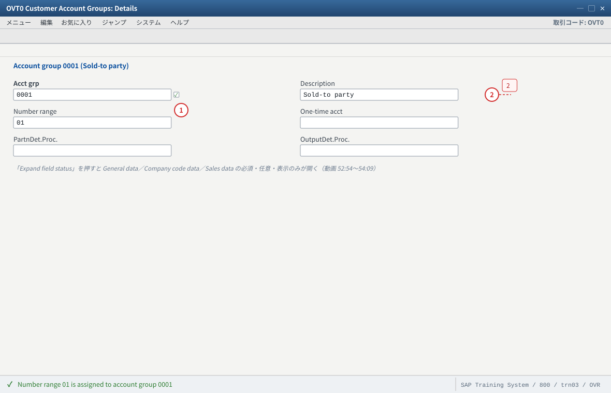
- 1 番号範囲 01 は XD01 で得意先を新規作成するときの採番。使っている得意先がある状態で変えると既存番号と矛盾する
- 2 受注のパートナー（SP／SH／BP／PY）が自動で決まる源流。ここが空だと受注でパートナーが出ない
自システムでの確認：0001 と 0002 の項目ステータスを比べる。「受注で住所が必須にならない」はこの設定が原因で、受注側の設定ではない。欄名は環境により異なる。
得意先グループ（Customer Groups）— 動画の Customizing ③
OVS9・XD02- 目的
- 動画（
52:22付近）はOVS9で得意先グループの一覧（47 エントリ）を実演します。得意先グループは得意先の分類（統計・分析のキー）で、受注処理そのものを制御する設定ではありません。「制御する設定」と「分析用の属性」を区別できることが、この節の目的です。 - IMG パス（環境によって呼称が異なる）
- SPRO → 販売と流通 → 販売 → マスタデータ → 得意先 → 得意先グループを定義
- T-code
OVS9（動画で実演）／XD02の販売エリアデータ → 販売タブ（得意先の得意先グループ欄）
- 入力値 / 確認対象
動画で確認できる得意先グループ： 01 Industrial customers 02 Trading companies 03 Development partners 04 Wholly-owned subsid. 05 Part-owned subsidi. 06 Competition 07 Public sector 10 Private customer 20 CP Mass （ほか、計 47 エントリ）
OVS9を起動し、一覧が動画と同じ並び（01〜）であることを確認する。XD02→ 得意先1000→ 販売エリアデータ → 販売タブで「得意先グループ」欄を確認（動画51:22付近の画面にも出ています）。- 自分の環境で使う予定のグループ（例
01Industrial customers）を 1 つメモする。
OVS9 の一覧が読めること。②
XD02 で得意先の得意先グループが確認できること。③ 得意先グループは「分析・統計の分類」であり、与力価格や明細カテゴリを直接決める設定ではないと言えること。
OVS9 が「得意先グループ（Customer groups）」で、勘定グループ（Account groups, OVT0）とは別物です。名前が似ているので混同注意。② 得意先グループを変えただけで受注の挙動（ブロック・価格）が変わると思い込む → 変わりません（分析属性です）。
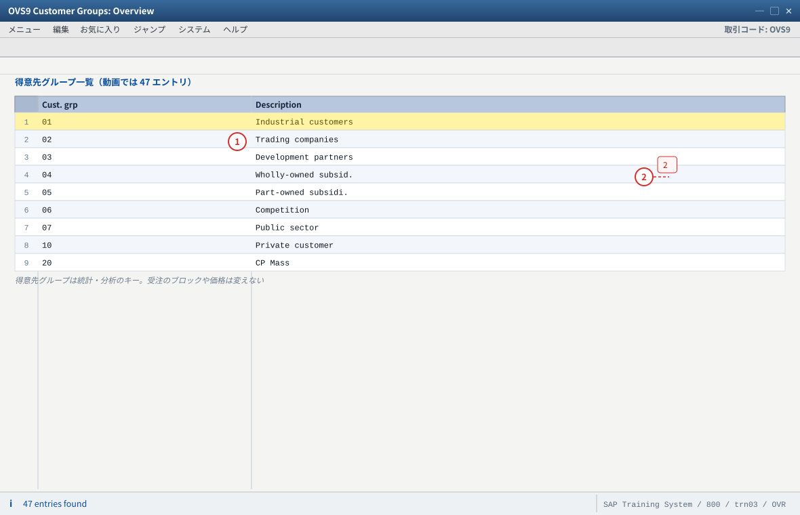
- 1 統計・分析の分類であり、与力価格や明細カテゴリを決める設定ではない。混同すると探す場所を間違える
- 2 ここにグループを足しても、得意先マスタ（XD02 販売エリアデータ → 販売タブ）に値が入るまで受注には影響しない
自システムでの確認：エントリ数は環境により異なる。得意先 1000 の得意先グループは XD02 の販売タブで確認する。
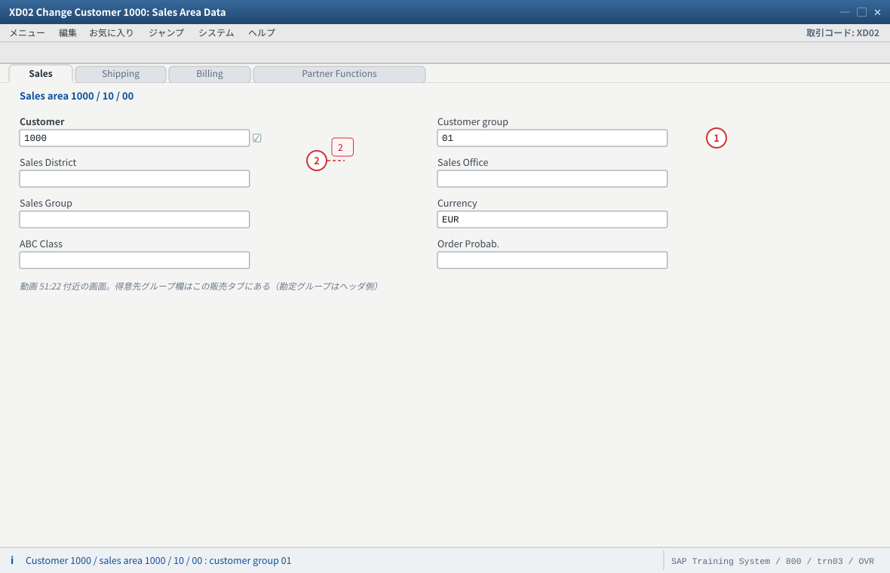
- 1 得意先グループは得意先マスタ側の属性。受注画面で見えても、変えただけでブロックや価格は動かない
- 2 勘定グループはこの画面ではなくヘッダ（XD02 の初期画面）で見る。0001（得意先）と 0002（出荷先）は別物
自システムでの確認：タブ名・欄名はリリースで異なる。得意先グループが空でも受注は作れる（分析に使われていないだけ）。
SIS レポートビュー（Sales Summary VC/2 の画面設計）— 動画の Customizing ④
SPRO（4 画面）・VC/2- 目的
- 動画（
27:06〜28:29）が最も長く割いている Customizing です。VC/2（Sales Summary）に何が出るかは、ここで決まります。受注処理の「ツールとヘルプ」の後半を担う内容で、動画では 4 つの表が実演されます。 - IMG パス（環境によって呼称が異なる）
- SPRO → 販売と流通 → 販売サポート（CAS）／情報システム（SIS）→ リスト（Lists） → レポートビュー関連の 4 アクティビティ
- T-code
SPRO（IMG）／VC/2（Sales Summary 本体）／SM30・SM31（同じ表を直接保守する場合）
- 入力値 / 確認対象
動画の 4 画面（この順に実演されます）： ① Maintain Report Views（情報ビューの定義） 001 Complete information（Standard＝チェック済み / Form SD-SALES-SUMMARY） 002 Address/partner info 003 Statistical info 005 Telesales 100 Credit Information 101 Last SD Documents 102 Backorders 103 Quick Info 900 New Internet cust. ② Maintain Views for an Evaluation（ビューへ情報ブロックを順番つきで割当） 例：Info view 001 Complete information Seq 001 Address / 002 Customer Classific. / 003 Performance Measures / 004 Contact persons / 005 Sales Order Info / 006 Customer Pricing / 007 Cust Delivery Info / 008 Partial Deliv. Info / 009 Cust Transport Info … （動画では 51 ブロック。詳細画面で Form / Window / Element まで持ちます） ③ Maintain the Report Views for a User（ユーザ別の既定ビュー） 例：ユーザ BAPMS → ビュー ZPD（Precision Drilling V） ユーザ WF-SD-2 → ビュー 900（New Internet cust.） ④ Last Documents for a Customer（既存伝票の統計更新） 文書カテゴリごとの「Statistics update desired」： 1 Sales activities(CAS) 2 External transaction 3 Invoice list 4 Credit memo list 5 Intercompany invoice 6 Intercompany credit me. A Inquiry B Quotation(チェック) C Order(チェック) D Item proposal …（動画では <b>B Quotation・C Order・Delivery・Credit memo request</b> にチェックが入っています）
SPRO→「SAP Reference IMG」→ 販売と流通（Sales and Distribution）配下で「リスト（Lists）」を開き、動画と同じ 4 つのアクティビティを見つける（Set Updating Of Partner Index／Item Index／Define Selection Criteria／Define List Layout Of Expected Customer Price が並ぶ画面が動画に出ます）。- ① Maintain Report Views：情報ビューの一覧を確認。動画では
001にだけ Standard チェックが入っています（＝既定で完全情報が出る理由）。 - ② Maintain Views for an Evaluation：行を選んで詳細を開き、Form / Window / Element（例 Form
SD-SALES-SUMMARY/ WindowMAIN/ ElementLIST1_001）まで確認する。 - ③ Maintain the Report Views for a User：自分のユーザが入っていなければ、動画と同じように 1 行追加して既定ビューを割り当てる（練習では
001か101を推奨）。 - ④ Last Documents for a Customer：文書カテゴリ
C Orderの Statistics update が ON であることを確認（OFF だとVC/2の Last SD documents に受注が出ません）。 VC/2を起動し、得意先1000を入れて「View」ボタンで動画と同じ情報ビュー一覧（001〜900）が出ることを確認する。
VC/2 の「View」で、001／002／003／005／100／101／102／103／900 が並ぶこと（動画と同じ）。② ビュー
101（Last SD Documents）を選ぶと、受注と請求書の一覧（番号・日付・正味価額・ステータス）が出ること。③ 自分を「Report Views for a User」に割り当てた場合、
VC/2 の初期表示がそのビューになること。001 の定義が無い、またはユーザ別割当がおかしい（①②③のどれか）。② Last SD documents が空 → 「Last Documents for a Customer」で
C Order の統計更新が OFF、またはその得意先に伝票が無い。③ SIS のフレキシブル分析は統計ファイルの初期構築が必要な環境があります。動画の環境（IDES/教育用）では既に構築済みなので、疑うのは最後にしてください。
④ 動画の概念スライドに出てくる得意先
5264（FA IDES, Walldorf）はスライド用の例です。実演は得意先 1000 です。VC/2 を得意先 1000 ・ビュー 001 とビュー 101 で表示し、出てくる情報ブロックの違いを一覧にしてください。そのうえで「③ Report Views for a User に行を足すと何が変わるか」を予想してから実際に試してください。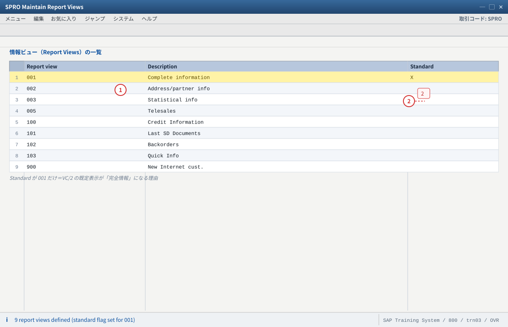
- 1 001 の Standard チェックが外れると VC/2 の既定ビューが変わる。動画では 001 にだけ入っている
- 2 Form SD-SALES-SUMMARY は「② Maintain Views for an Evaluation」の詳細で確認する。VC/2 のレイアウトはここに紐づく
自システムでの確認：SPRO の「リスト（Lists）」配下で 4 つのアクティビティ（① Maintain Report Views ② Maintain Views for an Evaluation ③ Maintain the Report Views for a User ④ Last Documents for a Customer）を探す。画面名は環境により異なる。
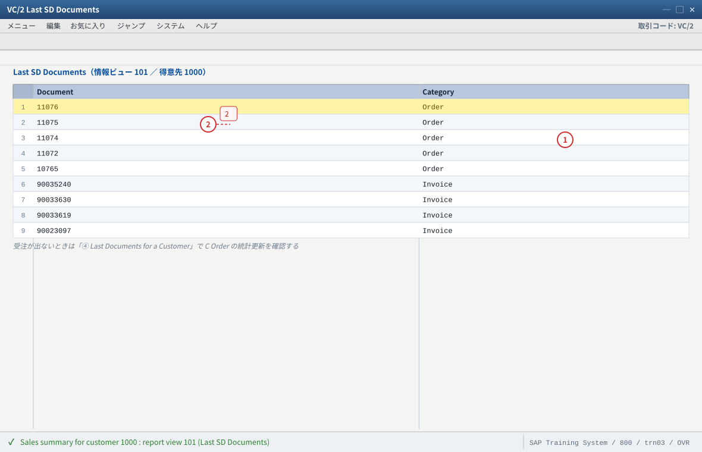
- 1 文書カテゴリ C Order の統計更新が OFF だと、ここに受注が並ばない（→ ④ Last Documents for a Customer）
- 2 番号は動画と同じ得意先 1000 の例。概念スライドの得意先 5264（FA IDES, Walldorf）は例示なので混同しない
自システムでの確認：VC/2 で得意先 1000 を入れ「View」を押すと 001／002／003／005／100／101／102／103／900 が並ぶ。統計が未構築の環境では数字が出ない（構造だけは見える）。
納入日程行カテゴリ（Schedule Line Categories）
VOV6- 目的
- 納入日程行（Schedule line）は「いつ、いくつ納入するか」を持ち、所要量タイプと在庫確認（ATP）がここに付きます。「受注したのに在庫確認が走らない／所要量が出ない」は、ほとんどの場合この設定です。
- IMG パス（環境によって呼称が異なる）
- SPRO → 販売と流通 → 販売 → 販売伝票 → 販売伝票明細 → 納入日程行カテゴリを定義
- T-code
VOV6／SE16N（TVEP＝納入日程行カテゴリ）／VA03（明細 → 納入日程行）
- 入力値 / 確認対象
納入日程行カテゴリの例（環境により異なる。動画のデモは 明細 TAN の標準）： 項目：所要量タイプ（Requirement type）／在庫確認（Availability check）／ 納入日付タイプ（Delivery date type）／納入数量提案／与力関連 など 確認の手順： 1) VA03 で受注を開く → 明細 → 納入日程行 → カテゴリを読む 2) VOV6 でそのカテゴリを開き、所要量タイプと在庫確認を読む 3) 品目マスタ（MM03 → MRP3）の<b>戦略グループ</b>と突き合わせる
VA03で動画と同じ受注を開き、明細の納入日程行を展開してカテゴリを確認する（例：明細TANに対する標準の納入日程行カテゴリ）。VOV6でそのカテゴリを開き、所要量タイプと在庫確認の値を確認する。- 品目マスタ（
MM03→ MRP3）で 戦略グループを確認し、納入日程行カテゴリの所要量タイプと整合しているかを見る。 - 在庫確認の 3 階層（伝票タイプ → 納入日程行カテゴリ → 品目マスタ）を、
OVZ2（伝票タイプ側）とMM03で突き合わせる（詳細は C13）。
VA03 の納入日程行カテゴリが読めること。② そのカテゴリの所要量タイプと、品目マスタ MRP3 の戦略グループが対応して説明できること。
③
MD04 で、所要量タイプが空の場合は何も出ないことを確認（TAN の標準挙動）。VA03 と VOV6 で確認する習慣を付けてください。② 納入日程行カテゴリを変えると所要量・ATP・納入日の決まり方が同時に変わります。1 項目ずつ変えて差分を見る。
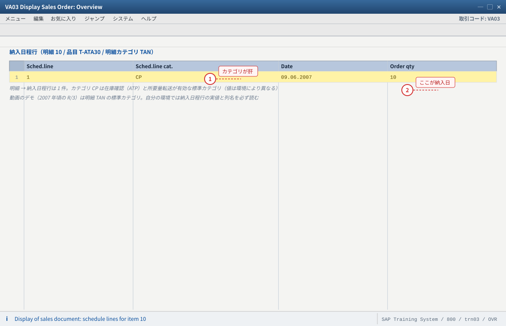
- 1 納入日程行カテゴリ CP は「在庫確認（ATP）＋所要量転送」が有効な標準カテゴリ。ここが空／別カテゴリだと MD04 に所要量が出ない
- 2 日付は納入日程行の日付。受注の Req.deliv.date 09.06.2007 がここに落ちる
自システムでの確認：VA03 → 明細 → 納入日程行を表示し、Sched.line cat. の列を読む（表示方法と列名は環境により異なる）。
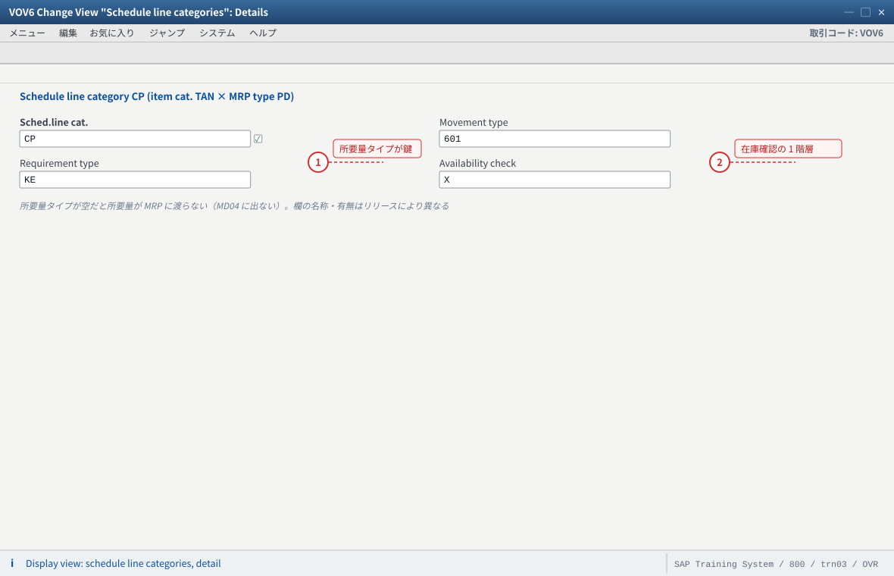
- 1 所要量タイプ（Requirement type）が入っているから品目所要量が MRP に渡る。空だと何も出ない（エラーではなく仕様）
- 2 在庫確認は 伝票タイプ → 納入日程行カテゴリ → 品目マスタ の 3 階層。上位が下位を上書きする（C13）
自システムでの確認：VOV6 で自分の環境のカテゴリを開く。移動タイプ 601 は「受注出庫」を示すが、値は環境により異なる。
伝票タイプ × 明細カテゴリの割当（許可テーブル）
VOV4- 目的
- 明細カテゴリ決定の前段です。伝票タイプごとに「使ってよい明細カテゴリ」を許可します。ここに無いカテゴリは受注に投入できません（画面には入るが、Enter でエラーや別カテゴリに変わる）。
- IMG パス（環境によって呼称が異なる）
- SPRO → 販売と流通 → 販売 → 販売伝票 → 販売伝票明細 → 伝票タイプごとに明細カテゴリを割当
- T-code
VOV4（割当と決定の両方がある。練習では「割当」側）／SE16N（TVAK・TVAPと割当の関係）
- 入力値 / 確認対象
例（動画のデモに倣う）： 伝票タイプ OR に許可する明細カテゴリ：TAN（標準）／TAX 系（無償）／TANN ほか 練習で作る場合：ZOR1 → ZTAN を追加し、OR の標準は変えない 注意：品目使用目的（Usage）や高レベル明細カテゴリの組み合わせで 「使う／使わない」が更に分かれる場合があります（返品・無償など）
VOV4の該当ビューで、伝票タイプORに許可されている明細カテゴリの一覧を確認する。- 明細カテゴリを 1 つ追加して試す（例：練習用に
ZTANを作り、ZOR1に割り当てる）→VA01でZOR1を使い、品目を入れて明細カテゴリがZTANになることを確認。 - 逆に、許可していない明細カテゴリを指定しようとしたときの挙動（エラー／代替）を記録する（故障対照表の材料になります）。
OR（または ZOR1）で TAN が使えること。② 追加したカテゴリが新規受注で実際に使われること（
VA01 → 明細詳細で確認）。③ 「割当（許可）」と「決定（自動でどれになるか）」は別の仕組みだと説明できること（決定は C8）。
② 標準の
OR の割当を削ると、既存の標準業務が止まります。Z 伝票タイプで練習。VOV4 で「割当」と「決定」の 2 画面を開き、それぞれ何を決めているかを 1 行ずつで書き分けてください。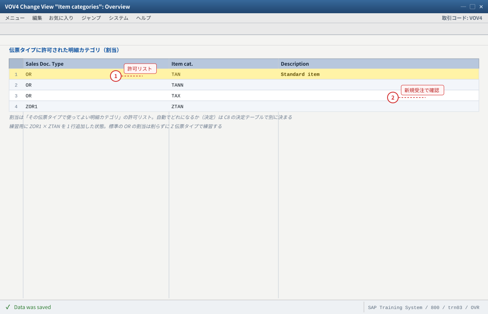
- 1 ここは「使ってよい明細カテゴリ」の割当（許可）リスト。決定テーブル（C8）とは別の仕組み
- 2 追加した ZOR1 × ZTAN の行。VA01 では新規受注でだけ効く（既存受注の明細カテゴリは不変）
自システムでの確認：VOV4 の割当ビューで OR の行を読み、練習では ZOR1 × ZTAN を追加してから VA01 で ZOR1 の受注を作る。画面の呼称は環境により異なる。
明細カテゴリ決定（決定テーブル）— 受注処理の心臓
VOV4・VOV7・SE16N- 目的
- 「なぜこの明細カテゴリになるのか」の答えがここにあります。販売伝票タイプ × 品目カテゴリグループ × 品目使用目的 × 高レベル明細カテゴリ の 4 キーで明細カテゴリが決まります。
- IMG パス（環境によって呼称が異なる）
- SPRO → 販売と流通 → 販売 → 販売伝票 → 販売伝票明細 → 明細カテゴリ決定
- T-code
VOV4（決定テーブル）／VOV7（カテゴリ定義）／MM03（品目カテゴリグループ）／VA03（結果の確認）
- 入力値 / 確認対象
決定テーブルのキー（動画のデモで実際に使われている値）： 販売伝票タイプ OR 品目カテゴリグループ （品目 T-ATA30 の値。品目マスタ 販売組織2 の「品目カテゴリグループ」） 品目使用目的 （空。返品・無償などで値が入る） 高レベル明細カテゴリ （空。BOM 親明細などの構造で使う） → 明細カテゴリ TAN（Standard Item） 確認の順序： 1) VA03 で明細カテゴリ（TAN）を読む 2) MM03 の販売組織2 で品目カテゴリグループを読む 3) VOV4 の決定テーブルで 4 キー → TAN の行を探す
MM03→ 品目T-ATA30→ 販売組織 2 ビューで品目カテゴリグループを読む。VOV4の明細カテゴリ決定テーブルで、OR× その品目カテゴリグループ × 空 × 空の行を探し、結果がTANであることを確認する。- 品目カテゴリグループを別の値にした品目（例：
T-ATA29や別の品目）で受注を作り、明細カテゴリが変わるかを観察する（変わらなければ決定テーブルの別行が効いています）。 - 練習として、決定テーブルに 1 行追加して（
ZOR1× 品目カテゴリグループ × 空 × 空 →ZTAN）、新規受注で反映されることを確認する。
VA03 の明細カテゴリと、VOV4 の決定テーブルの結果が一致すること。② 4 つのキーの名前を、資料を見ずに言えること（伝票タイプ・品目カテゴリグループ・品目使用目的・高レベル明細カテゴリ）。
③ 追加した行が新規受注で効くこと（既存受注には効かないことを確認）。
② 品目使用目的（Usage）や高レベル明細カテゴリが意図せず入る → 参照コピーした受注・BOM 品目で起こりやすい。
VA03 の明細詳細で確認。③ 伝票タイプを変えても既存受注の明細カテゴリは変わりません（新規受注で確認）。
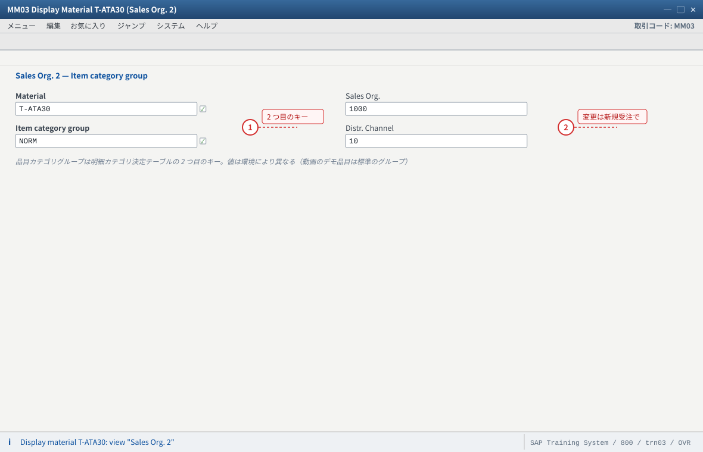
- 1 決定テーブルの 2 つ目のキー。OR × NORM × 空 × 空 → TAN の行を VOV4 で探しにいく
- 2 ここを別の値にした品目で受注を作ると明細カテゴリが変わる。変えたら必ず新規受注で確認する（既存受注は不変）
自システムでの確認：MM03 → 品目 → 販売組織 2 → Item category group。ビューの呼称は環境により異なる。
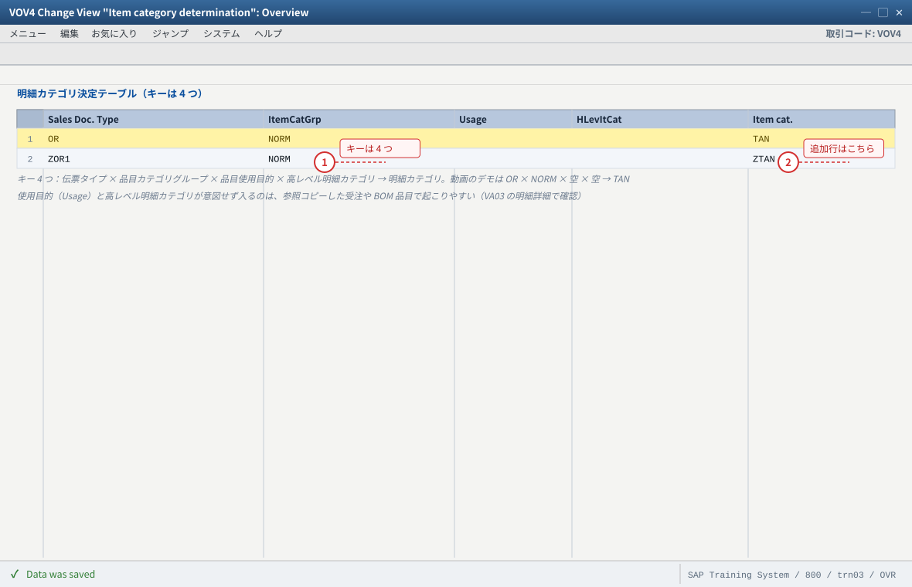
- 1 1 つでもキーが合わないと行に当たらず、エラーまたは別カテゴリへフォールバックする。必ずキー 4 つを読む
- 2 練習で追加した ZOR1 × NORM × 空 × 空 → ZTAN の行。新規受注でだけ効く
自システムでの確認：VA03 の明細カテゴリと、VOV4 の決定テーブルの結果が一致するかを見る。既存受注は伝票タイプを変えても明細カテゴリが変わらない。
納入日程行カテゴリの決定
VOV5・VOV6- 目的
- 明細カテゴリと所要量タイプから納入日程行カテゴリを決めるテーブルです。ここが 在庫確認（ATP）と所要量作成の入口になります。
- IMG パス（環境によって呼称が異なる）
- SPRO → 販売と流通 → 販売 → 販売伝票 → 販売伝票明細 → 納入日程行カテゴリの決定
- T-code
VOV5（決定）／VOV6（定義）／VA03（結果確認）
- 入力値 / 確認対象
キー：明細カテゴリ × 所要量タイプ（品目マスタ MRP3 由来） → 納入日程行カテゴリ（所要量タイプ／在庫確認／納入日付タイプを持つ） 確認の順序： 1) VA03 の明細 → 納入日程行 → カテゴリを読む 2) VOV5 でそのカテゴリに至るキーを特定する 3) VOV6 でカテゴリの中身（在庫確認の有無）を読む
VA03で受注の納入日程行カテゴリを確認する。VOV5の決定テーブルで、明細カテゴリ × 所要量タイプの組み合わせを確認する。VOV6でそのカテゴリの在庫確認の値を確認し、C13 の 3 階層（伝票タイプ／納入日程行カテゴリ／品目マスタ）と突き合わせる。
VA03 → VOV5 → VOV6 の順で、同じカテゴリに行き着くこと。② 在庫確認の ON/OFF がどこで決まっているかを言えること。
TAN の標準はこのケース）。エラーではなく仕様です。② 在庫確認の 3 階層の優先順位を混同しやすい（C13 で整理）。
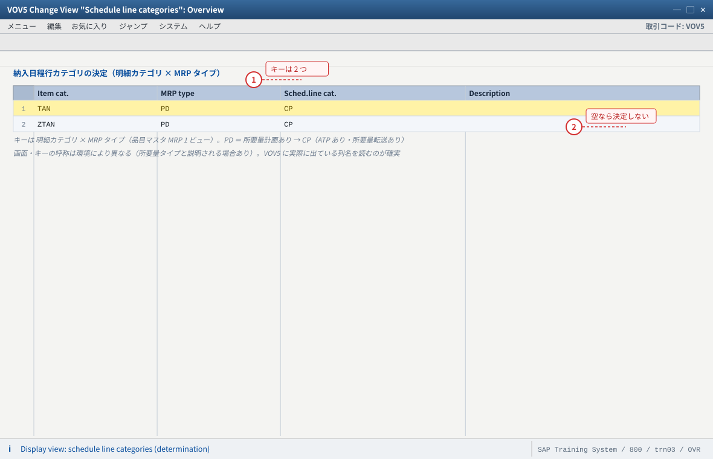
- 1 キーは「明細カテゴリ × MRP タイプ」。MRP 3 ビューの戦略グループ由来の所要量タイプと混同しやすい
- 2 MRP タイプが空、または行が無いと決定に至らず、在庫確認も所要量も走らない（エラーではなく仕様）
自システムでの確認：VA03 → VOV5 → VOV6 の順にたどり、同じカテゴリに行き着くことを確かめる。決定したカテゴリの在庫確認は VOV6 で読む。
出荷プラントの自動提案（3 つの優先順位）
VD51/VD52/VD53・XD02・MM02・VBAP- 目的
- 動画が独立したスライドを割いた論点（
19:51付近）です。受注明細の出荷プラントは、3 つの主データから優先順位つきで提案されます。「品目マスタを直したのに反映されない」を防ぐのがこの STEP の目的です。 - IMG パス（環境によって呼称が異なる）
- SPRO → 販売と流通 → 基本機能 → マスタデータ → 客先品目情報／得意先マスタ・品目マスタ側は各マスタの保守画面
- T-code
VD51（客先品目情報の登録／VD52・VD53）／XD02（得意先：販売エリアデータ → 出荷タブ）／MM02（品目：販売組織 1）／SE16N（KNMT・KNVV・MVKE）
- 入力値 / 確認対象
優先順位（上が強い。動画のスライドと同じ）： 1. 客先品目情報（Customer-Material Info Record） VD51/VD52/VD53 動画スライド：C1 × M1 × 客先品目コード PC-100 → 出荷プラント 1400 2. 得意先マスタ（出荷先の販売エリアデータ） XD02 → 出荷タブ 動画スライド：得意先マスタ S1 → 出荷プラント 1100 3. 品目マスタ（販売組織 1 ビュー） MM02 → 販売組織 1 動画スライド：品目マスタ M1 → 1000 / M2 → 1200 （本編デモの品目 T-ATA30 は 1200 ＝ Change Plant で 1000 Dresden を選ぶ場面もあり）
- 3 か所を順に開いて、動画のデモ品目の実値を書き出す：
VD53（得意先×品目）→XD03（出荷先の販売エリアデータ → 出荷タブ）→MM03（販売組織 1 の出荷プラント）。 - わざと 3 か所に違う値を入れて、受注でどれが勝つかを実測する（練習では
XD02とMM02の 2 か所から開始し、最後にVD51を追加）。 - 受注（
VA01）で明細を入れ、Deliver.Plant に何が入ったかを記録する。 SE16NでVBAP（受注明細）のWERKSと、MVKE／KNVV／KNMTの該当項目を並べて見る（どの源泉が効いたかを証拠で示す）。
② 「品目マスタを変えても受注が変わらない」場合、上位 2 か所（客先品目情報・得意先マスタ）に値が入っていることを証拠として示せること。
③
VBAP-WERKS で受注明細の出荷プラントを直接確認できること。② 動画のスライドには “Weighting the different sources of information during plant determination” とあり、標準の順序は ABAP（USEREXIT 等）で上書きされ得ます（SAP Note 2787562）。3 か所すべて空／矛盾しているのに想定外のプラントが入る場合は、拡張を疑って講師に確認してください。
③ 出荷プラントが変わると出荷ポイントと出荷タイプも再決定されます（後続伝票があると影響大。練習では後続伝票の無い受注で）。
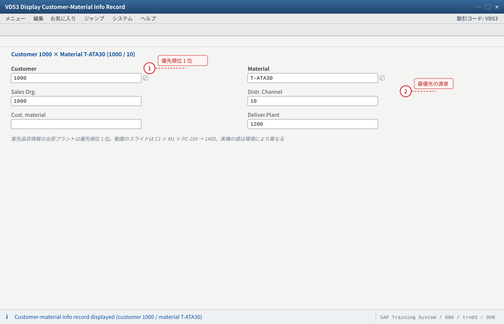
- 1 客先品目情報は 得意先 × 品目 × 販売エリア の組み合わせで持つ。登録は VD51、照会は VD53
- 2 ここに入ると得意先マスタ・品目マスタの出荷プラントより強く効く。上位が優先される
自システムでの確認：VD53 で得意先 × 品目 × 販売エリアを入れて出荷プラントを読む。値が空なら下位（得意先マスタ → 品目マスタ）が提案される。
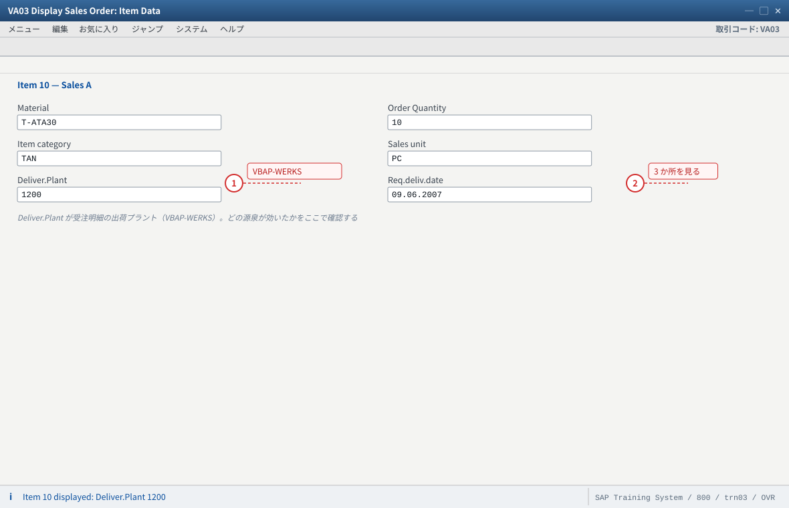
- 1 受注明細の出荷プラント。SE16N で VBAP を見れば「どの源泉が効いたか」を証拠として示せる
- 2 品目マスタを直しても変わらないときは、上位 2 つ（客先品目情報・得意先マスタ）に値が入っている証拠
自システムでの確認：XD03 の出荷タブ、MM03 の販売組織 1、VD53 の 3 か所を書き出してから VA01 で明細を投入する。想定外のプラントは ABAP 拡張（SAP Note 2787562）を疑う。
パートナー機能と決定（得意先マスタ側）
XD02・OVT0・VBPA- 目的
- 受注の 4 役割（
SP／SH／BP／PY）は、得意先マスタのパートナー機能と勘定グループ／伝票タイプのパートナー決定手順から自動提案されます。動画のXD02実演（51:10付近）がまさにこの画面です。 - IMG パス（環境によって呼称が異なる）
- SPRO → 販売と流通 → 基本機能 → パートナー → パートナー決定手順を設定／得意先側は
XD02 - T-code
XD02（販売エリアデータ → パートナー機能タブ）／OVT0（勘定グループのパートナー決定手順）／SE16N（VBPA＝受注のパートナー、KNVP＝得意先のパートナー）
- 入力値 / 確認対象
動画の XD02（得意先 1000）で確認できるもの： パートナー機能一覧：SP Sold-to party 1000 / BP Bill-to party 1000（＋ SH・PY など） その近くのブロック：Delivery and payment terms（Incoterms／Terms of payment／ Paym.guar.proc.／Credit ctrl area） 販売タブ：Sales district／Sales Office／Sales Group／Customer group／ ABC class／Currency／Order probab. ← 動画 51:22 付近 受注側の対応：VA03 のヘッダ → パートナー（SP/SH/BP/PY と相手先）
XD02→ 得意先1000→ 販売エリア1000/10/00→ パートナー機能タブでSP／BP／PY／SHの登録を確認する。- 同じ画面の Delivery and payment terms（インコタームズ・支払条件・与信管理エリア）を確認する（受注の支払条件
ZB01の出所）。 - 販売タブで Sales Office／Sales Group／得意先グループ／Order probability を確認する（動画
51:22の画面）。 VA01で新規受注を作り、パートナーが自動提案されることを確認する。出荷先だけ手で変えて、何が再決定されるかを見る（練習②の予習）。SE16NでKNVP（得意先のパートナー）とVBPA（受注のパートナー）を並べて見る。
SP／BP／PY／SH が受注のパートナーにそのまま提案されること。② 支払条件
ZB01 が得意先マスタ由来であることを、両画面で示せること。③
KNVP と VBPA の対応が読めること。② 出荷先（
SH）を変えたときの再決定の範囲を誤解しやすい（→ 概念 8 節）。与力価格・出荷プラントは再決定、販売エリア・販売事務所は不変。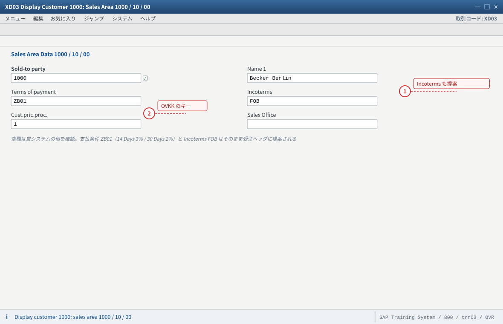
- 1 Incoterms FOB。納入条件は受注ヘッダに提案され、出荷・請求まで引き継がれる
- 2 Cust.pric.proc. は与力価格決定の 3 つ目のキー（OVKK）。ここが変わると価格決定手順が変わる
自システムでの確認：XD03 → 得意先 1000 → 販売エリア 1000/10/00 → Sales / Shipping タブ。与信管理エリアと支払保証手続も同じ画面で読める。
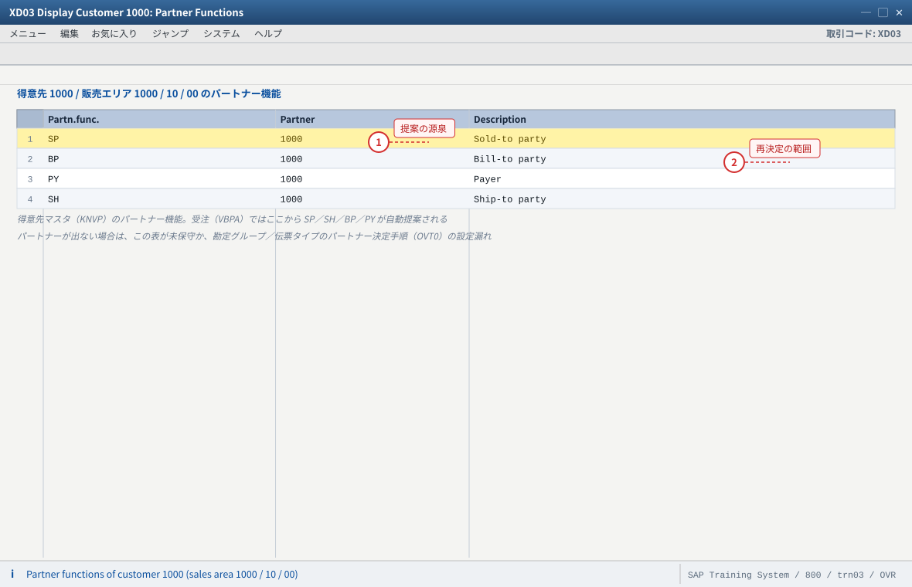
- 1 SP／SH／BP／PY はここから受注へ自動提案される（KNVP → VBPA の対応で確認）
- 2 出荷先を変えると与力価格・出荷プラントは再決定、販売エリアと販売事務所は不変
自システムでの確認：VA01 で新規受注を作り、パートナーが自動提案されるかを見る。SE16N で KNVP と VBPA を並べると対応が読める。
与力価格決定（条件技術の入口）
OVKK・V/06・V/07・V/08・VK11/VK13- 目的
- 受注の Net value（動画では
22,990.00 EUR）がどこから来るのかを追えるようにします。価格は「条件レコード」から来ますが、どの条件タイプを探すかは価格決定手順が決めるという 2 段構造が要点です。 - IMG パス（環境によって呼称が異なる）
- SPRO → 販売と流通 → 基本機能 → 与力（Pricing）→ 与力手順を定義／条件タイプを定義／アクセス順序を定義
- T-code
OVKK（価格決定手順の割当＝販売伝票タイプ側）／V/06（条件タイプ）／V/07（アクセス順序）／V/08（条件テーブル）／VK11・VK13（条件レコード）
- 入力値 / 確認対象
動画のデモで確認できるもの： 受注の Net value：22,990.00 EUR（明細 10 PC 投入後。動画 19:27 付近） 条件タイプ：PR00（価格）／MWST（税）／VPRS（在庫評価額）ほか 確認の順序： 1) VA03 の条件画面で、実際に決定された条件タイプと金額を読む 2) その条件タイプの条件レコードを VK13 で照会（得意先×品目の有効期間） 3) VOV8 で伝票タイプ OR の「価格決定手順」を確認 → OVKK で手順の中身 4) V/07 でアクセス順序（どの条件テーブルをどの順で探すか）
VA03で受注を開き、条件画面（与力分析）を表示して、決定された条件タイプと金額を書き出す。VK13でその条件タイプ（PR00）を照会し、有効期間と金額を確認する（受注日が期間内かどうかが肝）。VOV8→ 伝票タイプORの詳細で価格決定手順を確認し、OVKKでその手順に含まれる条件タイプの順序を見る。- わざと条件を無効化（または期間外にして）受注を作り、Net value が 0 になる／警告が出ることを観察する（故障対照表の材料）。
② 「どの条件タイプを探すかは価格決定手順が決める」と言えること（手順 → 条件タイプ → 条件レコードの 3 段）。
③ 条件を無効にしたときの症状（Net value 0／与力日付のエラー等）を記録したこと。
VK13 で有効期間を確認）。② 明細ごとに与力日付（Pricing date）が使われます。動画のデモでは与力日付
02.06.2007 が出ています。日付がずれると条件が拾われません。③ 手で条件を変更（手動条件）すると、後で再決定で消えることがあります（練習②の再決定と関連）。
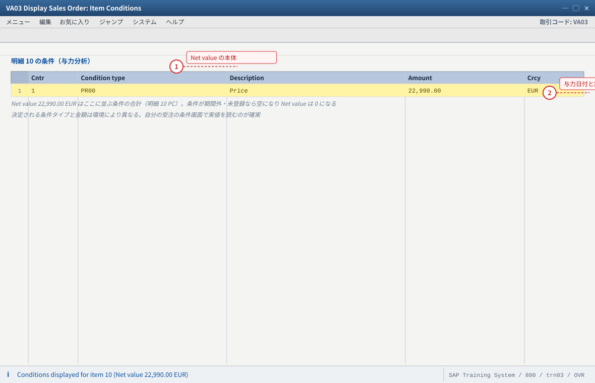
- 1 PR00 が Net value 22,990.00 EUR の本体。ここが空なら受注ではなく条件レコードの問題
- 2 与力日付 02.06.2007 が条件レコードの有効期間に入っているかを必ず確認する
自システムでの確認：明細の条件画面で条件タイプと金額を書き出し、VK13 の条件レコードの有効期間と突き合わせる。
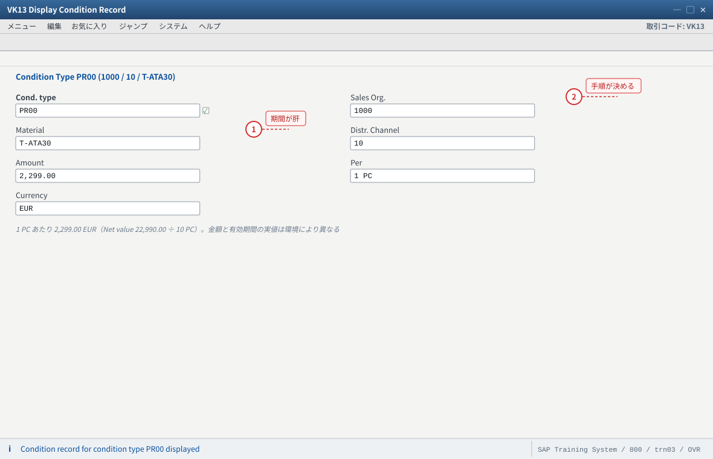
- 1 条件レコードは 得意先 × 品目 × 有効期間 の組み合わせ。与力日付がこの期間に入るかで金額が決まる
- 2 手順（OVKK）→ 条件タイプ（V/06）→ 条件レコード（VK13）の 3 段。どの条件タイプを探すかは手順が決める
自システムでの確認：VK13 で PR00 を照会し、有効期間に与力日付 02.06.2007 が入るかを見る。手順は VOV8 の伝票タイプ OR → OVKK で確認する。
在庫確認（ATP）の 3 階層
OVZ2・MM02（MRP3）・VOV6- 目的
- 「在庫があるのに受注で警告が出る／出ない」を切り分けられるようにします。在庫確認は 伝票タイプ・納入日程行カテゴリ・品目マスタ の 3 か所で決まり、上位は下位を上書きできます。
- IMG パス（環境によって呼称が異なる）
- SPRO → 販売と流通 → 基本機能 → 在庫確認（Availability check）／品目側は
MM02→ MRP3 → 在庫確認 - T-code
OVZ2（伝票タイプ別の在庫確認）／VOV6（納入日程行カテゴリ側）／MM02・MM03（MRP3 の在庫確認）／CO09（与力可能数量の照会）／MD04
- 入力値 / 確認対象
3 つの階層（上位が優先。品目マスタが最下位）： 1) 伝票タイプの在庫確認 OVZ2（例：OR は 在庫確認を実行しない、が既定のことが多い） 2) 納入日程行カテゴリの在庫確認 VOV6（在庫確認の可否） 3) 品目マスタ MRP3 の在庫確認 MM02/MM03（例 02 = 個別所要量ベース） 確認の道具：CO09（与力可能数量と不足）／MD04（所要量と在庫の流れ）
MM03→ 品目 → MRP3 で「在庫確認」の値を確認する。VOV6で納入日程行カテゴリの在庫確認を確認し、OVZ2で伝票タイプ側を確認する。3 か所の値を並べて書く。CO09で品目とプラントを入れ、与力可能数量を確認する。VA01で在庫を超える数量を受注し、警告が出るか／ブロックされるかを記録する（伝票タイプ・品目の設定で挙動が変わることを体感する）。
②
CO09 の数量と、受注時の警告が整合していること。③ 在庫確認が「されない」設定（動画の
TAN は所要量タイプが空）では、警告が出ないのが正常であること。② 所要量タイプが空の明細では在庫確認が走らないため、「ATP が効かない」のではなく「受注在庫を持たない明細だから」が答えです（→
../sapmto/ で受注在庫の実習）。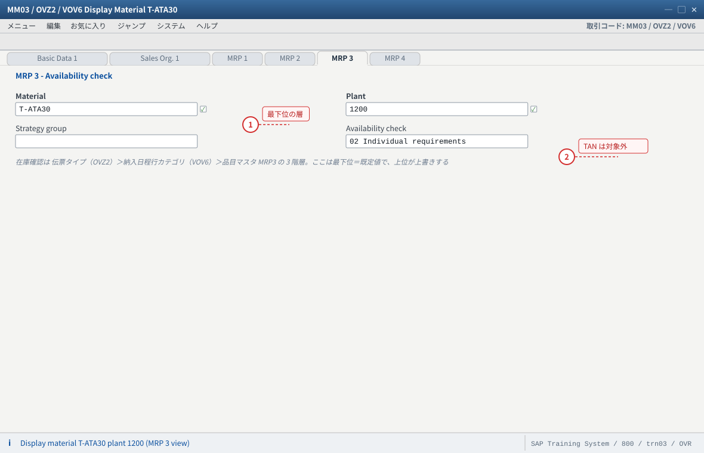
- 1 品目マスタの在庫確認は 3 階層の最下位。伝票タイプや納入日程行カテゴリ側が OFF なら ATP は走らない
- 2 所要量タイプが空の明細（動画の TAN）は ATP の対象外。「在庫があるのに警告が出ない」の答え
自システムでの確認：MM03 で 品目 × プラント の MRP3 を開き、在庫確認の値を書き出す。伝票タイプ側は OVZ2、納入日程行カテゴリ側は VOV6、引ける数量は CO09、所要量の流れは MD04 で確認する。
不完全性チェック（Incompletion）—「不完全な受注」はこう作られる
OVA2・VUA2・VUP2・VUE2・V.02・SE16N- 目的
- 動画では
VA01のデモ中に「Enter PO number」の必須エラーが出ます（09:28付近）。これが不完全性チェックです。どの項目が必須かを定義する側を設定します。 - IMG パス（環境によって呼称が異なる）
- SPRO → 販売と流通 → 基本機能 → 不完全項目のログ（Log of Incomplete Items） → 不完全性手順を定義
- T-code
OVA2（不完全性手順の定義）／VUA2（警告かエラーか）／VUP2（明細カテゴリへの割当）／VUE2（納入日程行カテゴリへの割当）／V.02（不完全な受注の一覧）／V.00（不完全な伝票の一覧）
- 入力値 / 確認対象
動画の環境で確認できる症状： PO 番号が必須（保存時に「Enter PO number」） → 受注の PO Number 欄に dddd / test 等のダミーを入れて保存している 定義の階層： 不完全性手順（Procedure） OVA2：手順に「グループ」を割り当てる グループ（Groups） 例：ヘッダ／明細／納入日程行／パートナー 項目（Fields） 例：VBAP-POSEX（PO 番号）など 挙動（Warning / Error） VUA2 適用先 伝票タイプ（VOV8 の不完全性手順）／明細カテゴリ（VUP2）／ 納入日程行カテゴリ（VUE2） 主要テーブル：TVUV（手順）・TVUVG（グループ）・TVUVF（項目）・ VBUV（明細）・VBUP（明細ステータス）・VBUK（ヘッダステータス）
OVA2を起動し、動画のデモ伝票タイプORに割り当てられている不完全性手順を確認する。- その手順に含まれるグループと項目を開き、PO 番号系の項目が入っているかを探す（動画の症状と設定を結びつける）。
VUA2で警告／エラーの設定を確認する（エラー＝保存不可、警告＝保存可）。- 自分の練習用に 1 項目追加して効果を見る（例：納入希望日を必須にする）→
VA01で空にして保存し、症状を記録。 V.02（不完全な受注の一覧）を実行し、わざと作った不完全な受注が一覧に出ることを確認する。SE16NでVBUV／VBUKも見る。
OVA2 を指して説明できること。② 自分で追加した必須項目で、保存時にエラーが出ることを確認したこと。
③ 不完全な受注が
V.02 に表示されること（＝不完全なまま放置されない仕組み）。② エラーにしたまま保存できない伝票を作ると業務が止まります。運用的には警告にして
V.02 で管理するのが一般的。③ 変更は伝票タイプ・明細カテゴリ・納入日程行カテゴリの 3 か所に分かれます。「設定したのに効かない」は適用先を確認。
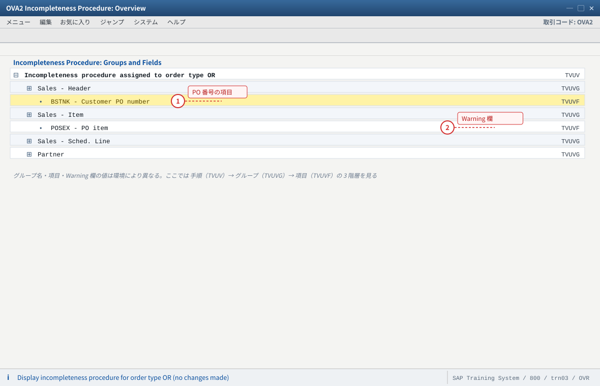
- 1 動画の「Enter PO number」はこの 1 項目。手順 → グループ → 項目の 3 階層で必須が決まる
- 2 項目ごとの Warning にチェックが無ければエラー（保存不可）。運用は警告にして V.02 で管理するのが現実的
自システムでの確認：OVA2 で伝票タイプ OR に割り当てられた手順を開き、グループごとに項目（VBAP-POSEX など）を書き出す。割当先は 伝票タイプ（VOV8）・明細カテゴリ（VUP2）・納入日程行カテゴリ（VUE2）の 3 か所。
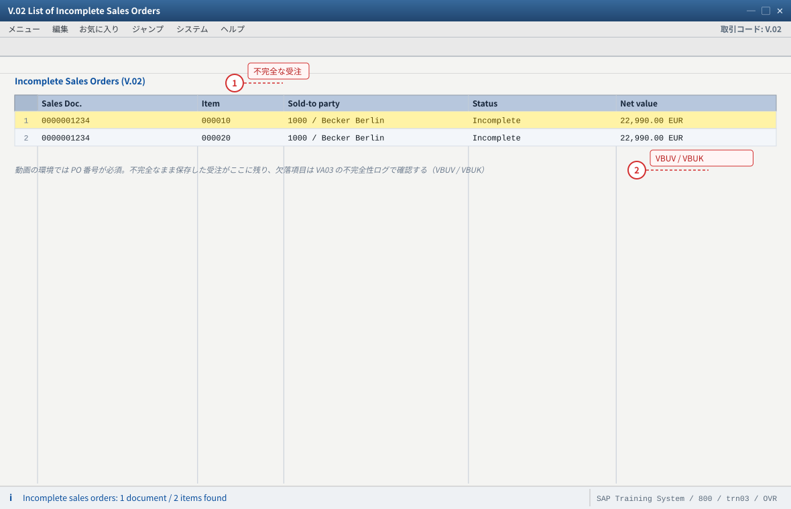
- 1 わざと不完全なまま保存した受注がここに出る。出ないときは不完全性手順が伝票タイプ・明細カテゴリに未割当
- 2 どの項目が欠けているかは VBUV（不完全性ログ）と VA03 の不完全性ログで見る。VBUK は伝票ヘッダの状態
自システムでの確認：伝票タイプの不完全性手順（VOV8）を外すと V.02 に出なくなる。SE16N で VBUV（不完全性ログ）・VBUK・VBUP（伝票／明細ステータス）も見ておく。
コピー管理（受注 → 出荷 → 請求）
VTAA・VTFL・VTFA・VTFA（請求）- 目的
- 参照コピーしたときにどの値を引き継ぎ、何を再決定するかを決めるのがコピー管理です。動画の Business Data スライド（支払条件
ZB01／インコタームズFOBの上書き）は、この設定と対で理解します。 - IMG パス（環境によって呼称が異なる）
- SPRO → 販売と流通 → 販売 → 販売伝票 → 伝票のコピー管理を設定
- T-code
VTAA（受注 → 受注）／VTFL（受注 → 出荷）／VTFA（受注 → 請求）／VA01（「Create with Reference」で参照コピー）／VL01N・VF01
- 入力値 / 確認対象
コピー管理の要点（画面で確認する項目）： 要求伝票タイプ → ターゲット伝票タイプ（例：OR → LF、OR → F2） コピーグループ（Header / Item / Schedule line） データ転送（Data transfer） − ヘッダ／明細のどちらの値を使うか − 価格（与力タイプ）を再決定するか、コピーするか − 支払条件・インコタームズはヘッダからコピーか、明細から再決定か 数量／日付のルール（部分数量でのコピー等）
VTFL（受注 → 出荷）を開き、OR → LF のエントリでデータ転送の設定（与力の再決定など）を確認する。VA01の初期画面で「Create with Reference」を使い、既存受注を参照して新しい受注を作る（動画の Business Data スライドの状況を再現）。- 参照元と新しい受注で支払条件・インコタームズがどうなったかを比べる（動画のスライドでは明細 20 で
ZB01→ZB02／FOB→EXWの上書き例が示されています）。 VA03の伝票フローで、受注 → 出荷 → 請求の連鎖を確認する（どの伝票からコピーされたかが分かります）。
② 出荷・請求が受注からコピーされる流れを、伝票フローで説明できること。
③ 与力を再決定する設定／コピーする設定の違いを、
VTFL の画面で指せること。② 後続伝票がある受注を参照コピーすると、数量の二重計上になり得ます（部分コピーの設定を確認）。
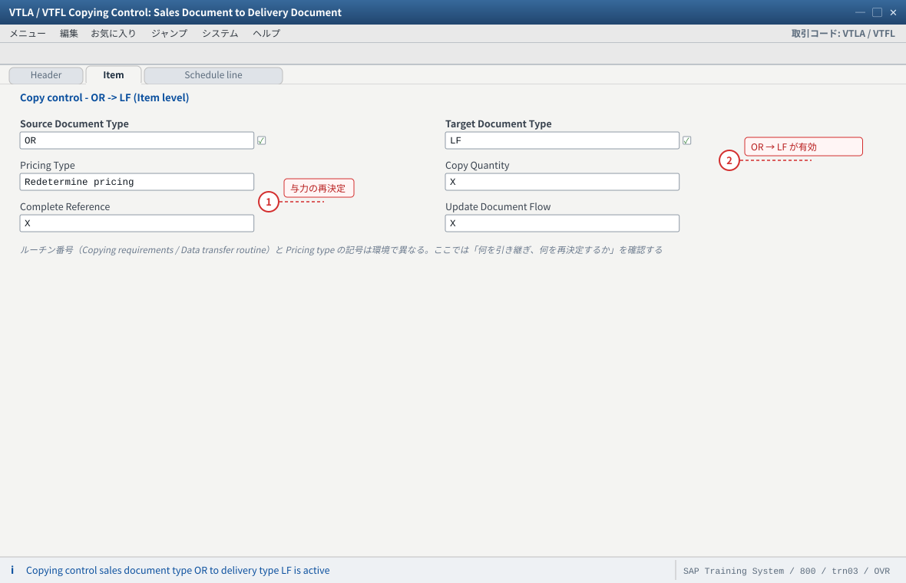
- 1 価格を「コピー」するか「再決定」するかがこの設定。Redetermine なら参照元の古い価格は引き継がれない
- 2 受注 → 出荷のコピー管理は VTLA（出荷 → 請求は VTFL）。OR → LF の行が無いと出荷が作れない
自システムでの確認：手顺ページは VTFL を「受注 → 出荷」と書いていますが、その T-code は VTLA です（VTFL は 出荷 → 請求）。VTFA（受注 → 請求）と合わせ、支払条件 ZB01・インコタームズ FOB がどこで決まるかを VA01 の参照コピーで追う。
出荷・請求・自動転記（受注の先）
VL01N・VL02N・VF01・OBYC・VBFA- 目的
- 受注は出荷と請求に繋がって初めて業務になります。動画は出荷伝票
80007832の照会までを示しています。ここでは作成側の入口と、在庫・会計への自動転記の所在を押さえます。 - IMG パス（環境によって呼称が異なる）
- SPRO → 販売と流通 → 出荷（Shipping）／請求（Billing）／自動転記は 財務会計 → 自動転記（OBYC）
- T-code
VL01N／VL02N／VL03N（出荷）・VF01／VF03（請求）・OBYC（自動転記）・VA03（伝票フロー）・MB51／MM03（在庫への影響確認）
- 入力値 / 確認対象
動画で確認できる値（出荷伝票の照会画面）： 出荷伝票 80007832 ドキュメント日付 22.11.2000 出荷先 1000（Becker Berlin） 計画出庫 21.11.2000 / 実出庫 23.11.2000 明細：10 P-102 26 PC / 20 P-104 39 PC（いずれも ItCa TAN） タブ：Item Overview / Picking / Loading / Transport / Status Overview / Goods Movement Data 自システムで作る場合の入口： VL01N（受注参照で出荷を作成）→ VL02N（ピッキング数量入力 → 出庫過帳 PGI）→ VF01（請求）
VA03で受注を開き、伝票フローを確認する（動画では受注から出荷80007832へ飛べることが示されます）。- 出荷を作る：
VL01N→ 出荷ポイントと納入日を指定 → 受注番号を参照 → 明細と数量を確認 → 保存。 VL02Nでピッキング数量を入れ、出庫過帳（PGI）を実行する。実行後、在庫が減り、売上原価が計上されることをMB51／MM03／FB03で確認する（自動転記OBYCの設定による）。VF01で請求を作成する（受注または出荷を参照）。請求書の正味価額が受注と一致するか確認する。- 再度
VA03の伝票フローで受注 → 出荷 → 請求が 1 本に繋がっていることを確認する。 VC/2（Sales Summary）で得意先1000の Open Sales Order Val／Open Delivery Value／Open Bill. Doc. Val が変化することを見る（動画25:25付近と同じ見方）。
② PGI 後に在庫が減ることを確認したこと（
MB51 または MM03 のプラント在庫）。③
VC/2 の与信・受注残の値が動いたこと（＝情報照会が受注処理と連動していることを実感）。VL09 等が必要）。練習環境でも、まずは照会と作成の分離を意識してください。② 在庫が無い／与信ブロックが付いていると出荷が作れません。C13（在庫確認）と C14（不完全性）／与信設定を先に確認。
③ 動画は照会までです。「作成手順は本站が補った内容」であることを意識して読み、必ず自システムの画面で確かめてください。
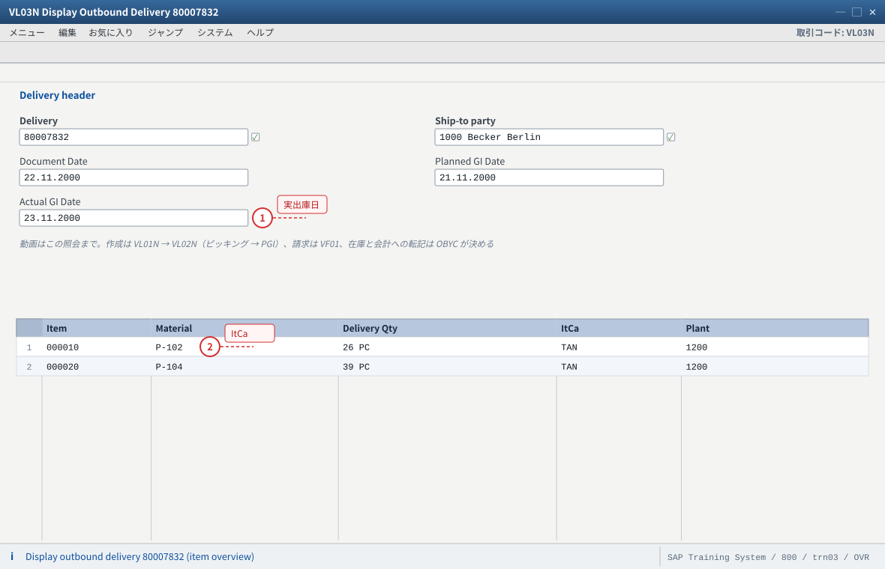
- 1 実出庫日 23.11.2000 が入ると在庫が減り、売上原価が計上される（OBYC）。計画 21.11.2000 との差が遅延の記録
- 2 明細の ItCa は TAN。想定と違うときは明細カテゴリ決定（VOV4 の 4 キー）を疑う
自システムでの確認：VA03 の伝票フローで 受注 → 出荷 80007832 → 請求 が 1 本に繋がること。PGI 後に在庫が減ることを MB51／MM03 で、VC/2 で Open Sales Order／Delivery Value が動くことも見る。
配置完了チェックリスト
以下がすべて「はい」になれば、受注処理の練習環境は整っています。
VA01でOR＋ 得意先 1000 から概況画面まで進める（C0）VOV8で伝票タイプORの出荷・請求・与信・不完全性の各グループを説明できる（C1）VOV7で明細カテゴリTANの「所要量タイプが空」「与力関連 ON」を確認した（C2）OVT0で勘定グループの番号範囲・項目ステータス・パートナー決定手順を確認した（C3）OVS9とOVT0の違い（得意先グループ vs 得意先勘定グループ）を説明できる（C4）VC/2で情報ビューを切り替え、Last SD documents と与信情報を表示できた（C5）- 納入日程行カテゴリの所要量タイプと品目マスタの戦略グループを突き合わせた（C6）
VOV4の「割当」と「決定」の違いを説明できる（C7・C8）- 明細カテゴリ決定の 4 キーを暗唱でき、
VA03の結果と一致させた（C8） - 納入日程行カテゴリ決定から在庫確認まで 1 本の線で説明できる（C9・C13）
- 出荷プラントの 3 つの優先順位を実測し、
VBAP-WERKSで確認した（C10） - 得意先マスタのパートナー機能と受注のパートナーを対応づけた（C11）
- 与力価格の 3 段（手順 → 条件タイプ → 条件レコード）を説明できる（C12）
- 不完全性チェックの 3 階層を説明し、
V.02に不完全な受注を出せた（C14） - 参照コピーで一致した項目／変わった項目を示せた（C15）
- 受注 → 出荷 → 請求を 1 本に繋ぎ、伝票フローで示せた（C16）